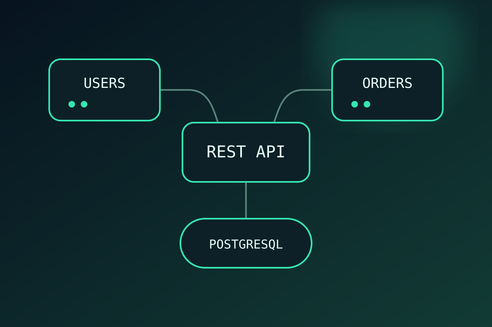

Full Stack Project · Bootcamp
API de usuarios y pedidos
Aplicación web que evolucionó desde un servidor con vistas hasta una API REST para administrar usuarios y pedidos. Integra autenticación, relaciones entre datos y carga de imágenes.
- CRUD de usuarios y pedidos.
- Autenticación y rutas protegidas con JWT.
- Relaciones 1:1, 1:N y N:M con Sequelize.
- Carga y validación de imágenes con Multer.
Node.js · Express · Sequelize · PostgreSQL · JWT · Bootstrap